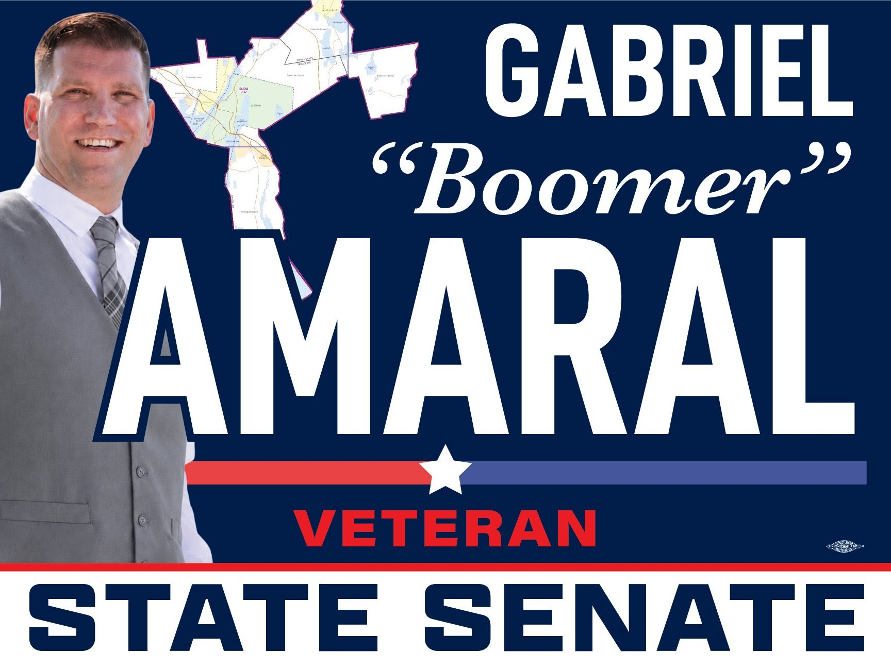

Republican for Massachusetts State Senate
Gabriel “Boomer” Amaral for State Senate
First Bristol and Plymouth needs new leadership that listens to regular people, fights for working families, supports public safety, and puts Bristol County first.

Campaign Message
This campaign is about the people who feel forgotten — the working people, the taxpayers, the veterans, and the families trying to build a future here in Bristol County. Boomer Amaral will fight for them every single day.
Career politicians have had years to fix the problems facing our communities. Families are working harder and falling behind while grocery bills, rent, electricity, and gas prices keep crushing working people.
Boomer believes Bristol County needs a senator who fights for the district — not the political machine. This campaign is about common sense, accountability, and putting the people of First Bristol and Plymouth first.
Priorities
Boomer Amaral is running to bring working-class values, common sense, and real accountability to Beacon Hill.
Economy & Cost of Living
Families are working harder and falling behind. Grocery bills, rent, electricity, and gas prices are crushing working people. Beacon Hill keeps spending money while everyday people struggle to pay bills. We need tax relief for working families and seniors — not more burdens.
Standing with Working People
Bristol County was built by tradesmen, factory workers, small businesses, fishermen, truck drivers, police, firefighters, and veterans. The political class has forgotten the people who actually keep this region running. Boomer stands with working people, not lobbyists and insiders.
Public Safety
People deserve safe neighborhoods. Boomer supports law enforcement while also demanding accountability and professionalism. He believes in cracking down on repeat violent offenders and illegal drug trafficking, and protecting children from fentanyl and gang violence.
Veterans
Veterans earned more than symbolic gestures and speeches. Boomer supports cutting bureaucracy, improving access to mental health and addiction services, prioritizing veterans for job training and housing opportunities, and making sure no veteran ends up homeless after serving this country.
Housing, Jobs & Opportunity
Young people should be able to afford homes in the communities they grew up in. Massachusetts is losing workers because opportunity is disappearing. Boomer supports vocational education, apprenticeships, and pathways to good-paying jobs without massive college debt.
Small Business
Small businesses are drowning in regulations and rising costs. Boomer believes we need to make it easier to open and grow businesses in Bristol County, support local employers, and help local entrepreneurs succeed.
Transportation & Infrastructure
South Coast communities have been ignored for too long. Roads, bridges, and infrastructure need serious investment. Boomer will fight for Bristol County to receive its fair share of state funding.
Healthcare & Addiction
Addiction has devastated too many families. Boomer supports treatment, recovery, prevention, and stopping fentanyl trafficking. Mental health care should be easier to access, especially for veterans and young people.
Campaign Updates
Follow the campaign on Facebook for the latest news, events, and updates.
Support the Campaign
Your contribution helps us reach voters, organize volunteers, and bring new leadership to First Bristol and Plymouth.
Sign Up to Volunteer
Join the team. Sign up to volunteer, request updates, help with events, knock doors, make calls, or get a yard sign.